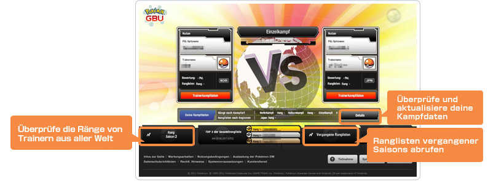
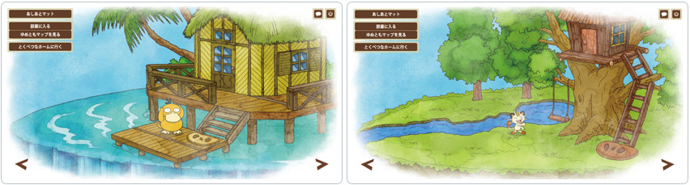

Wenn du auf deiner Spielesoftware von Pokémon Schwarze Edition oder Pokémon Weiße Edition ein Wi-Fi-Zufallsmatch im Bewertungsmodus bestreitest, wird das Ergebnis deinen Rang in der GBU beeinflussen.
Die GBU-Ranglisten zeigen deine Kampfdaten, die mit Trainern aus aller Welt verglichen werden.
In jeder Saison erhalten die 100 bestplatzierten Trainer der Gesamtrangliste besondere Profilbilder, die sie auf der Website des PGLs verwenden können.
• Um in den Ranglisten einer Saison berücksichtigt zu werden, musst du mindestens zehnmal ein Wi-Fi-Zufallsmatch, egal in welcher Kampfart, im Bewertungsmodus bestreiten.
Hinweis: Kämpfe, welche unentschieden ausgehen oder deren Verbindung unterbrochen wurde, zählen nicht.
• Melde dich beim PGL an und begib dich auf die Seite der GBU. Betätige die mit „Details“ beschriftete Schaltfläche, um deine aktuellen Kampfdaten zu überprüfen.
* Es kann eine Weile dauern, bis deine Kampfdaten angezeigt werden.
• Melde dich beim PGL an und begib dich auf die Seite der GBU. Betätige die mit „Rang Saison“ beschriftete Schaltfläche, um dir die aktuellsten Ranglisten anzeigen zu lassen.
* Die Ranglisten werden wöchentlich aktualisiert.
* Da die Ranglisten auf der Grundlage deiner Kampfdaten erstellt werden, kann es vorkommen, dass die Ergebnisse nicht sofort dem neuesten Stand entsprechen. Du kannst deine Kampfdaten unter „Details“ überprüfen.

• Alle drei Monate startet eine neue Saison. Vor Beginn und Abschluss einer Saison werden Wartungsarbeiten durchgeführt.
• Nach Saisonabschluss werden die Kampfergebnisse der Trainer ausgewertet, die an mindestens zehn Kämpfen teilgenommen haben. Die Veröffentlichung der Ranglisten erfolgt ca. 2 bis 3 Wochen später.
| Beginn | Ende | |
| Saison 1 | 13.04.2011 (Mi) |
28.06.2011 (Di) |
| Saison 2 | 29.06.2011 (Mi) | 27.09.2011 (Di) |
| Saison 3 | 28.09.2011 (Mi) | 27.12.2011 (Di) |
| Saison 4 | 28.12.2011 (Mi) |
27.03.2012 (Di) |
• Klick auf der Hauptseite der GBU auf die mit „Vergangene Ranglisten“ beschriftete Schaltfläche, um Einblick in die Ranglisten vergangener Saisons zu erhalten.

• Die jeweils 100 besten Pokémon-Trainer jeder Saison erhalten einen Pokal für ihre Profilbildauswahl.
• Der Pokal wird zeitgleich mit der Bekanntgabe der Endauswertung der Ranglisten unter der Option „Profilbild“ auf der Profilseite der jeweiligen Top-Spieler verfügbar gemacht.

• Die Kommunikation kann während eines Kampfes durch eine schlechte Drahtlosverbindung oder geringe Batterieleistung deines Nintendo DS-Systems abreißen. Stelle daher sicher, dass deine Drahtlosverbindung dauerhaft und die Batterie deines Nintendo DS-Systems ausreichend aufgeladen ist, um deinem Gegner und dir pausenlose Kämpfe zu ermöglichen. Wir behalten uns das Recht vor, Spieler, bei denen es zu häufigen Verbindungsabbrüchen kommt, gegebenenfalls von den GBU-Ranglisten auszuschließen.
Pokémon-Trainer aus der ganzen Welt nehmen an der GBU teil. Daher folgen wir der Einfachheit halber der koordinierten Weltzeit (UTC). In der Winterzeit ist Deutschland der koordinierten Weltzeit eine Stunde voraus, in der Sommerzeit 2 Stunden.
Beispiele:
• Wenn es in Deutschland z. B. während der Sommerzeit 14:00 Uhr ist, ist die entsprechende Zeitangabe nach UTC 12:00 Uhr.
• Ist es in Deutschland allerdings während der Winterzeit 14:00 Uhr, beträgt die entsprechende Zeitangabe nach UTC 13:00 Uhr.